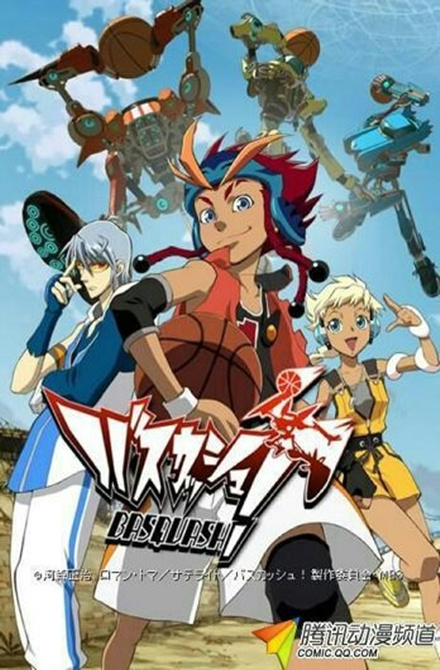

1. Kuroko no Basket sinopse:Kuroko no Basket é um dos animes mais conhecidos desta lista. A história trata sobre a famosa escola Teiko, que ficou famosa por seu clube de basquetebol, sua invencibilidade os fez ficar conhecidos como a geração dos milagres. Em suma, o time era composto por 5 prodígios, porém havia outro membro da equipe, que ficou conhecido como o sexto homem fantasma. O anime trata justamente desse sexto membro, que se juntou à Seirin High School. Contudo, ao descobrir que Kuroko fez parte da geração de milagres, todos da Seirin se surpreendem. Pois, o protagonista parece muito fraco, pequeno e magro. Então, como ele participou de uma equipe lendária?

2. Slam Dunk sinopse:Neste anime, a história gira em torno de Hanamichi Sakuragi. O calouro tem o recorde de ter sido rejeitado por 50 meninas durante o ensino fundamental. Contudo, sua vida iria mudar quando a jovem Akagi o questiona se ele gosta de basquete. Ao responder que sim, a garota o leva ao ginásio, onde o time de basquete pratica.

3. Ahiru no Sora (Dream Team) sinopse:O protagonista da história fez uma promessa a sua mãe, que venceria o primeiro torneio de basquete do ensino médio. Contudo, ao se juntar ao clube de basquetebol, ele descobre que não será tão fácil. Pois, o clube se tornou um ponto de encontro de delinquentes, onde não se pratica o esporte. No entanto, o seu amor à modalidade, começa a mudar a história desta equipe.

4. Basquash! sinopse:Esse anime se passa em um planeta futurista chamado Earthdash. Nele o basquete se tornou muito popular, mas passou a ser jogado com robôs gigantes, controlados por pessoas normais. Entretanto, Dan Jd, protagonista da história, odeia essa forma de praticar o esporte. Por isso, passa a ensinar aos seus amigos a como realmente se joga basquetebol.
5. Hoop Days sinopse:Aikawa lidera a equipe Tendoji High. Porém, quando ele muda de cidade, precisará criar um novo time do zero. Mas, o jovem aceitou o desafio, de criar um novo clube de basquetebol e ainda conduzi-lo ao Campeonato Nacional. Possivelmente, este é o anime que leva as regras do esporte mais a sério. Tendo quase nenhuma sacada cômica, é uma história que pode cair nas graças de muitos admiradores da modalidade.

6. Ro-Kyu-Bu! sinopse:Este é aquele tradicional anime de garotas fofas praticando algum esporte. Entretanto, a história gira em torno do garoto Subaru, que teve seu time de basquete fechado. Agora, ele usa seus conhecimentos do esporte para treinar um time de meninas. Este é um anime único quando se trata de basquete, mas não espere que ele leve tão a sério o tema.
7. Buzzer Beater sinopse:Beater é mais um anime futurista. Se passando há algumas centenas de anos no futuro, a história trata da vida de Hideyoshi. Em suma, o garoto sobrevive vivendo nas ruas de Nova York, até que é chamado para um time profissional. No entanto, seus adversários são alienígenas que dominaram a modalidade. As partidas se tornaram alvos de apostas milionárias e agora muita coisa está em jogo a cada novo confronto. Hideyoshi terá que liderar um time totalmente de humanos e derrotar os alienígenas. Para provar que a humanidade é a espécie mais forte, quando se trata de basquetebol.